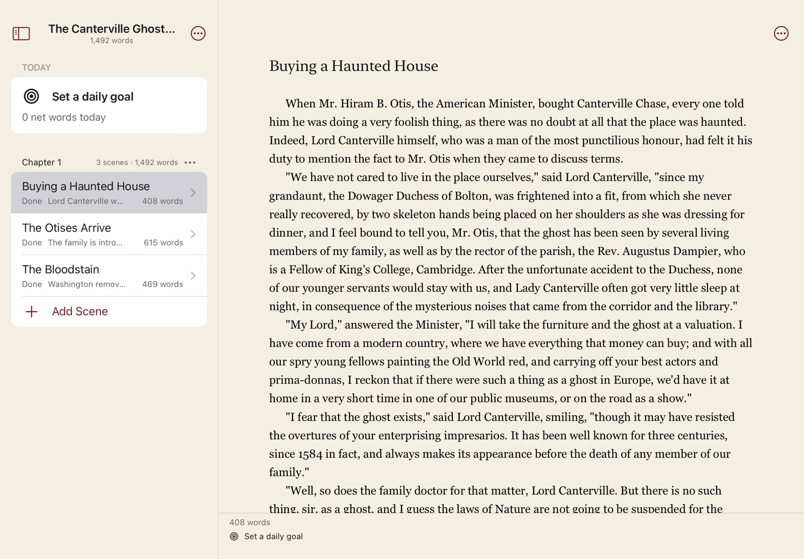
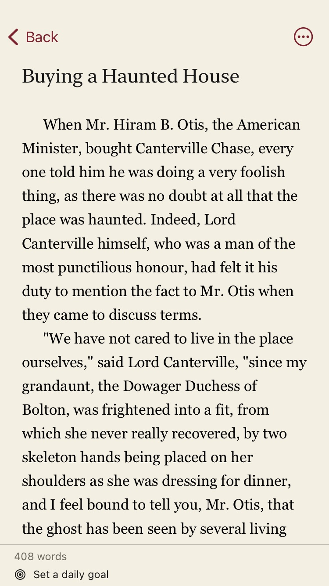
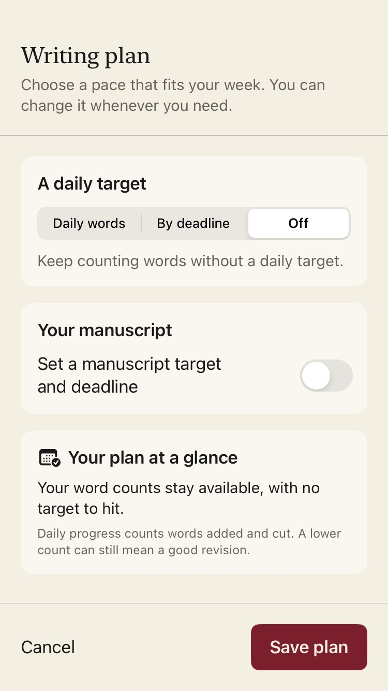
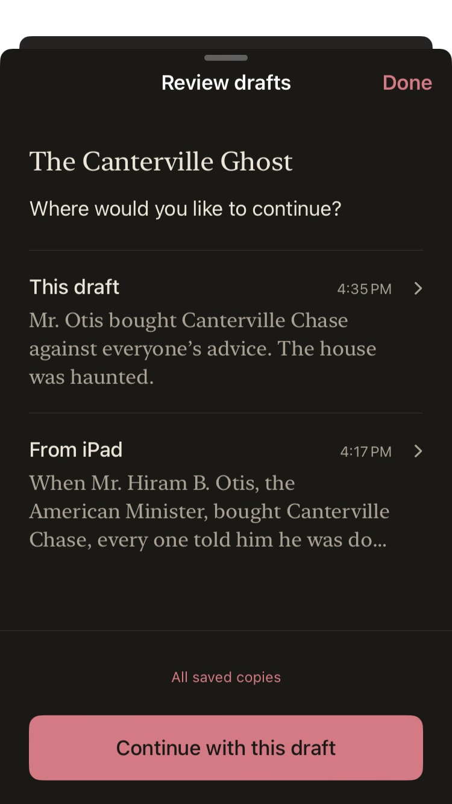

- Status
- Done
- Characters
- Arcs
- Location
- Canterville Chase
- Synopsis
Software developed for novels in development
An accomplice
for your novel.
Write it a scene at a time. Read it back as a book.
Rozdział is Polish for “chapter.” Say ROZ-jow.
The Canterville Ghost — Excerpt / Chapter 1
The Canterville Ghost — Excerpt
Words1,492
Scenes by status3 done
Open comments1Buying a Haunted House
1Chapter 1
3 scenes · 1,492 words
Make yourself at home. Mind the bloodstain.
The sample novel is Wilde’s The Canterville Ghost. The window is a drawing of the Mac app.
A novel is a big thing.
Start with one scene.
- Book paragraphs as you type
- The Manuscript view, set in type
- A board of chapters and scenes
- Characters that tag themselves
- Notes, with pictures
- Comments that stay put
- Versions, before you do something brave
- A writing plan, or none
- Find and replace across everything
Character notes / 07
U
Mrs. Umney
The housekeeper
Appears inThe Otises Arrive · The Bloodstain
Faints on cue. Ask for double wages.
For the details
between the lines.
The novel
comes with you.
The same file, on iPhone and iPad.




Your book is
none of our business.
No accounts. No analytics. No AI. One file, backed up wherever you like.
Questions
When can I try it?
Not yet. Mac needs macOS 15; iPhone and iPad need iOS 17.
Does it work offline?
Yes. Everything happens on your device.
Does it sync?
Through iCloud Drive. If two devices disagree, you keep both drafts.
Will it slow down on a long novel?
It’s tested at 1.2 million words, which is longer than the Bible.